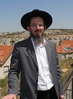

The Revelation at Sinai Changed My Life
He was born to a Christian family and was a successful missionary in the evangelical community in France. The church in which he was raised anticipated a rosy future for him, but then, right before completing his priestly studies, he decided to drop it all. He sought the Truth and ultimately found it in Judaism. * None of his friends and family imagined that the day would come when the priest-in-training would become a Jewish convert who devotes all his time to fighting missionaries. When you meet this Ger Tzedek, Binyamin Kluger, you see a Lubavitcher yungerman who speaks with a heavy French accent. You would never guess his origins.

“A clear answer from the Rebbe is what got me involved in Yad L’Achim’s work. I am quite familiar with missionaries’ arguments and can easily trounce them in debates.”
WHEN THE PRIEST SAID: I FOUND THE DIAMOND IN THE CROWN
He grew up in France in the city of Troyes as a member of a Catholic family. His name was Benjamin Lesage. His mother was a descendent of noble blood, which left an imprint of nobility and aristocracy upon the family. The family custom for generations was for the sons to go either to the army or enter the priesthood. His older brother chose the military option in a French naval commando unit, while Benjamin chose religion. From when he was a boy, he remembers taking an interest in Catholicism. He began attending lectures, reading books, and praying regularly in church.
“I was completely unfamiliar with Judaism. Once I converted, I recalled an incident that occurred when I was a child. It was when my family traveled on vacation to Belgium. I saw a Jewish child wearing a decorated kippa and I asked my grandmother where we could buy one since I wanted one too. She smiled and said, ‘It’s not for you.’ I did not know any Jews. I knew that my parents had Jewish friends, but how they were different than other Frenchmen I did not know.”
R’ Binyamin says he wanted to be a good Christian but his enthusiasm for Catholicism dissipated rapidly.
“The idols and images everywhere bothered me. The statues, ceremonies, the worship of G-d as though he was trapped inside a certain man, choked my faith in Catholicism. In the Bible it says, ‘Do not make any statues, any images,’ so how could they do this? Also the fact that priests never marry was disturbing. I wondered about the entire ideology of Christianity.”
The questions, doubts and lack of interest on the part of the priests to answer his questions pushed him to leave the church.
“A good friend in school introduced me to another branch of Christianity – Protestantism. I began attending their church and saw that what bothered me about Catholicism was absent here and I liked it a lot.”
At the new church, Benjamin headed a youth group and began taking a course in missionary tactics. Every Sunday he would convince his friends and family to come to this church, and he was very successful. However, his idealized world came crashing down when a Jew entered the picture.
Every Sunday, he and his friends would go out on the street to distribute flyers and convince people to get to know their religion. They would also invite them to come and hear the sermon given by the top priest in the church. Motivation to do this came from mercy for people’s souls. One week, when he and his friends went out to proselytize, he noticed one of the priests from the church hugging and kissing someone with great emotion. After the man walked away, the priest raised his hands and began murmuring something fervently.
Benjamin left his group and ran over to the priest to find out what was going on. The priest looked at him and said, “I found the diamond in the crown. I found a Jew who is willing to come to a lecture.” Benjamin never attributed importance to Jews. He didn’t know them. He heard tidbits of Jewish history here and there and how the Jews used to be the Chosen People, and how “because of their wickedness, they abandoned the good,” but nothing more. He asked the priest why he was so excited by this.
The priest said, “Think about what is important to G-d. The Jewish people are His eldest son, the treasured nation, the apple of His eye. But Jews are a stiff-necked people. For two thousand years they have refused to accept Christianity. When a Jew is willing to come to my lecture, then that is the greatest salvation of all.”
Afterward, in the priest’s talk, Benjamin noticed that it was all about Israel and the Jewish religion. The priest lied and said the church loves the land of Israel and its people, and he quoted mitzvos in the Torah. All the people that Benjamin and his friends had convinced to come began leaving in the middle of the talk, one after the other, since the priest was talking only about Judaism. At the end of the talk, Benjamin went over to the priest and complained that he was undermining all their efforts. The priest looked at him in astonishment and said, “What are you talking about? Did you see the Jew and how he sat and listened? He promised to come next week too. That is the greatest success.”
The enormous importance attributed by his spiritual teachers to converting Jews was surprising to Benjamin. In particular, he was greatly disturbed by the hypocrisy he saw before his very eyes.
“Every time that a Jew, a Holocaust survivor, would show up, instead of talking about Christianity, the priests would talk about mitzvos and love for the land of Israel. This was for the purpose of appealing to him. I did not understand why he shouldn’t hear the same ideas we told everyone else. It was the way they disguised themselves with a Jewish message that made me think. If the end justified the means, maybe they were lying to me too. I had grown up as a Christian, albeit a Catholic, but who said the basis of this religion was true?
“I decided to carefully examine everything they said. I was unwilling to accept superficial explanations. I searched for depth and that which made sense. I didn’t want to lie; I wanted to sell Christianity as it was. Like it? Great. You don’t like it? That’s okay.
“It was at this time that I began discovering contradictions within the ‘New Testament.’ Verses that were written in the Tanach, which supposedly testified to a new testament, were taken out of context. I discovered contradictions and ridiculous mistakes. The priest, who heard my questions, began teaching me how to disguise Christianity as Judaism. You didn’t speak about the New Testament but about Tanach; not about Yeshu but about the Jewish Messiah. And you called this Jewish Messianism. How was it possible that someone who had always taught me it was forbidden to lie and fool others was explaining to me how to lie and fool people? I stopped relying on his authority.
“I continued to learn in other places. Each time the priest spoke, I would check his sources; if I had questions, I asked other priests. One day, the head priest asked me why I no longer consulted with him. I avoided answering, but he offered to learn with me how to preach to Jews. Once a week, I learned with the priest how to convince Jews of the veracity of Christianity. The approach was that the Jewish Tanach actually speaks about Christianity. You had to prove to a Jew that all the prophecies about Moshiach were already fulfilled two thousand years ago when Yeshu appeared.”
Benjamin studied with the priest for a few months and decided to examine what they were learning. He checked each prophecy taken from Tanach that appears in the New Testament and compared the context of the verse in Tanach with the context in the New Testament. He discovered, to his amazement, that not only had the priest lied, but that all of Christianity is a lie. Most of the verses quoted in the New Testament are taken completely out of their original context in Tanach.
Furthermore, Benjamin found dozens of verses that the Christians purposely distorted in order to prove the correctness of Christianity. If a person does not check the source, he can readily accept what they say. He searched and found another 300 distortions as well as linguistic errors. He went to the head priest with his findings. He discovered that the priest’s knowledge was very limited – he knew what he needed to know in order to preach, but he himself wasn’t even knowledgeable in the New Testament. In order to respond to Benjamin, he began searching through books. He wasn’t able to come up with a coherent reply.
The priest enlisted all the members of the staff to his aid and three priests and five teachers sat facing Benjamin and debated with him for weeks, going through contortions in their answers, but to no avail.
“They were unable to answer even one question. Instead, they gave long-winded, convoluted answers, at the end of which it wasn’t clear what connection they had to the question.
“I prayed that G-d enlighten me so I would know that Christianity is true. I was afraid of a crisis of identity but it seemed inevitable. I soon realized that the New Testament is not a continuation of Tanach, and apparently G-d had not changed His mind since the Bris Bein HaB’sarim about choosing the Jewish people as His nation.”
It was the head priest himself who sweetened the bitter pill of his having to leave Christianity, after he asked one question too many and aroused his ire.
“Later on, I told the head priest of my decision to leave. The shocked priest asked: Are you a heretic? Is there no G-d? I told him that I think there is a Creator of the world and the Tanach is the book that I relate to, but Christianity is not the true path.
“He called me up to the altar and all the priests laid their hands on my head and asked the congregation to join them in prayer to purify my soul. The priests closed their eyes in concentration and I burst out laughing. The priest was furious. ‘It isn’t enough that you are heretic, have you become mad too?’ I replied, ‘For weeks you haven’t been able to convince me of anything, and now you expect that by putting your hands on my head and closing your eyes that I will be convinced? That doesn’t seem ridiculous to you?’
“Then I went down from the altar and headed for the door. The priest took the microphone and thundered, ‘It is forbidden to go near him. You don’t see what I see here. Satan is taking Benjamin by the sleeve in the direction of the exit.’”
FROM CHRISTIANITY
TO ISLAM
Many of Benjamin’s friends left the church and became atheists, but his faith in G-d was deeper. He believed that there is a Creator of the world and that he had to find Him within the many religions. For some reason, the Eastern religions did not appeal to him. He had been turned off by idols in his childhood so Eastern religions were not an option for him.
“When I told my parents that I had left the church, they were very upset. My father wanted to prove to me that Christianity is true. Obviously, he failed, and in the end, my parents and my brothers left Christianity for atheism. But I was convinced that there is a G-d and wanted to continue searching for Him. I have no idea why, but I considered it a fact.
“I was studying law in university in Lille. I had many Moslem friends and when they heard that I had left the church, they suggested I join them at the mosque. They gave me many books that explain Islam. In the city where I lived, in northern France, aside from churches there were five mosques and not even one shul. I decided to look into Islam.
“It was during the Ramadan period. Every night, lecturers came to the mosque. I heard them speak against France, against Europe, against the United States, and mainly against Jews who were termed ‘the lowest, cruelest, most evil nation in the world.’ When I heard this, I tried to recall instances of attacks in France and could only come up with attacks by Moslems and not a single Jew. I asked the lecturer, ‘Throughout history, the church and all the others persecuted Jews. You want to tell me that victim is worse than the persecutors?’
“I heard lectures there that denied the Holocaust when I knew that there were historic proofs for the Holocaust. My checking out Islam lasted only a few weeks. I found no fewer contradictions there than in Christianity. For example, in the Koran it says that Eretz Yisroel belongs to the Jewish people; if they themselves admit this, then why do they wage war to take Israel away from the Jews? In general, all their pronouncements are against the entire world. I thought – the fact that everyone else is the worst still doesn’t make you the best. I couldn’t take their lies and decided to drop Islam.”
THE REBBE’S SHLIACH
If Christianity was a lie, and Islam, which comes after it, was a lie, Benjamin felt he had to check out the religion that preceded both of those: Judaism. When he opened a Tanach he decided to read it by ignoring the Christian interpretation he knew. He read through the Chumash and reached the story of the Giving of the Torah. In all the world’s religions, they tell of a special man who experienced a revelation of G-d, which he was supposed to share with humanity. In Judaism, it says that Moshe received the Torah before all the Jewish people, a group of millions of witnesses. Benjamin understood that a revelation like this cannot be fabricated, when an entire nation began transmitting it from one generation to the next.
“I knew that the Tanach is the foundational book of the Jews. I knew it frontwards and backwards. I had many questions on it, things that seemed contradictory to me. I looked for a Jewish rabbi to answer my questions. There is a phone book for the north of France and I looked for an address of a Jewish rabbi, which is how I found the chief rabbi of northern France, the Rebbe’s shliach, Rabbi Eliyahu Dahan. I called the Jewish Cultural Center and R’ Dahan himself answered the phone. I told him that I had many questions on the Tanach and I would be pleased if he would answer them.
“He asked me whether I was Jewish. I told him I was not and he asked why I was so interested in this topic. I told him that I did not find answers at the church and mosque and I sought the Truth. He agreed to help me. My first question was: it says in the Torah ‘an eye for an eye,’ but it also says ‘do not take revenge, do not bear a grudge.’ He laughed and explained that ‘an eye for an eye’ was not meant literally, but was payment for damages.
“It dawned on me that Christians have no idea how to properly learn Tanach. The rabbi’s answers were satisfying. For the first time in my life, I was getting answers that resolved the questions. It all made sense, and today I know that what he told me was spiced with explanations and concepts from Chassidus and the Rebbe’s teachings.”
Benjamin was mainly impressed by the humility in which things were said: “This isn’t my wisdom but the wisdom of the Torah,” Rabbi Dahan said repeatedly.
“I said I wanted to join him for prayers at the shul, but he pushed me off. ‘What do you need it for?’ he asked me. I was taken aback since everywhere else they say, ‘Come, become a member and perhaps later on you will understand.’ Here, I understood things already and wanted to join, but the rabbi said that Judaism does not seek converts. ‘We are the Chosen People and don’t think this makes life easier. If you want to get close to the Creator of the Torah, there are Seven Noachide Laws for you to keep.’
“He referred me to books that explained the Seven Noachide Laws. I learned that a gentile cannot learn Torah because it belongs to the Jewish people. I was disappointed. I loved Tanach, and what was I supposed to do now? I decided to do all that I could in order to become a Jew. Every conversation with R’ Dahan ended with his warnings about conversion. Jews have 613 mitzvos, he said, and you will have to learn two new languages – Hebrew and Aramaic. Initially I was intimidated, but I soon resolved to learn and do everything. After all, this was the Truth.
“When he saw that I was serious, he referred me to the Kitzur Shulchan Aruch. I read it and thought: if this is the abridged version, what is the full-length Shulchan Aruch like?! But again, I got over that and was determined to do everything necessary to be a believer in the true religion and to be a part of it. Every day I learned another chapter in the Kitzur Shulchan Aruch and began to do what I learned. I washed my hands. I bought tzitzis. I stopped eating treif, and for a long time I only ate vegetarian, which caused me a medical problem that led me to a Jewish doctor.
“As soon as I walked in, he asked me whether I was Jewish. I said not yet and he asked me why I wore tzitzis; was it a part of a costume? I told him I was planning to convert and I very much wanted to be a Jew. He invited me to Shabbos meals and to shul where I met R’ Dahan in person for the first time. He realized that I was serious, and he suggested that I attend the shiurim that he gave. For a long time I did not miss a shiur. Each passing day deepened my connection with Judaism and my desire to convert. I felt that this is what my soul sought.”
His parents thought it would be a passing interest; just as he had dropped Christianity, he would drop Judaism. But that’s not what happened. R’ Dahan sent him to Eretz Yisroel to convert. He settled in Yerushalayim and learned every day in Or Gabriel, a yeshiva for French baalei t’shuva, whose rosh yeshiva is Rav Barkatz.
LUBAVITCHER
ANTI-MISSIONARY
He completed the conversion process and became a Jew and an ardent Chassid of the Rebbe MH”M. How did he begin working for Yad L’Achim? It’s an interesting story.
He was helping at the t’fillin stand at the Kosel one day along with the mashpia, R’ Moshe Weber a”h. Someone came over and began talking to him about what he used to preach in France. R’ Binyamin, who was familiar with the terminology, debated the fellow until the latter was utterly confused. The person told him that there were dozens of Christian organizations in Eretz Yisroel that worked to cause Jews to apostatize, and they operated freely.
R’ Binyamin went back to yeshiva feeling shaken up. He told R’ Barkatz all about what happened. The rosh yeshiva referred him to Yad L’Achim. He began working for Yad L’Achim mainly in the evenings. As time went on, he expanded his hours until he became a full time worker for Yad L’Achim who runs the division that fights missionaries and cults.
Before we speak about your work against missionaries, it would be interesting to hear about how you came to Chassidus and the Rebbe. When did that begin?
“It began in 5752. At first, my focus was on G-d and Torah study, but then came hiskashrus to the Rebbe which made the process that much easier. In the beginning, the connection was mainly through stories I heard while still in France and also in Eretz Yisroel. Later on, I connected to the more inner world which drew me in even more. The Rebbe’s explanations and guidance for life are invaluable. The way that the Rebbe explains concepts in Judaism is just incredible. The Rebbe explains it with the utmost veracity so that all questions vanish.
“In the course of my work, I experienced some special stories of my own that developed my hiskashrus to the Rebbe. I felt that the Rebbe is with me. One week, after 3 Tammuz, I became completely involved with Yad L’Achim. Bachurim at the yeshiva I learned in said that a bachur’s place is in yeshiva. ‘The Rebbe wants you to learn,’ they said, and I respected that, but at the same time I saw how many Jews I saved. I was faced with a dilemma and decided to write to the Rebbe.
“I wrote that I realize I had gotten swept up in things and I asked permission to return to yeshiva to learn full time. The answer in the Igros Kodesh amazed me. The Rebbe wrote that in a situation of danger to life, it is permitted and necessary to desecrate Shabbos, all the more so when it entails the apostasy of Jews, when one must close the book and save the burning town.
“Obviously, with that answer, not only did I not cut down my activities but I increased them.
“There is another story that I always remember. There was someone whom we managed to get out of the clutches of the missionaries, but in order that he not be left with a void, we had to get him into a yeshiva. We left the missionaries’ place with him and saw a bus passing by which said on it, ‘Write to the Rebbe and see miracles and wonders.’ He asked whether he could write to the Rebbe.
“He was in a confused state. Up until a moment before, he was convinced that Christianity was the true religion and we had negated that, and this is what he wanted to write about to the Rebbe.
“We went with him to Yeshivas Toras Emes where he put his letter into a volume of Igros Kodesh. In the letter he opened to, the Rebbe said that the fact that in the past he had been with missionaries and now he realized their lies obligated him to use his talents and knowledge in order to fight the missionaries and to rescue Jews from there.
“He was blown away. Then and there he joined us in our work. We see how the Rebbe is with us, accompanying us, leading us, and often we write to the Rebbe and receive clear answers that help us in our work.”
How extensive is the missionary work in Eretz Yisroel and how can an ordinary person avoid their enticements?
“When we talk about missionary work, we are talking about all kinds of organizations with varying agendas, from Messianic Jews to cults large and small. In our estimation, there are tens of thousands of Jews in Eretz Yisroel who are connected in one form or another with missionaries. They are in every city, from Eilat to Kiryat Shmoneh. They try reaching Jews in every possible way and are always well disguised. After all, they can’t just go over to a Jew and ask him to apostatize, so they offer ‘authentic Judaism.’ If the person is curious and argues with them, he is liable to fall into the trap. They are expert at distorting prophecies and p’sukim. Whoever isn’t knowledgeable loses.
“They are very sneaky. For example, they opened a disco in Yerushalayim and spoke openly there about Yeshu. Counselors talked with young people and gave out missionary material and invited them to lectures. Youth were given free music lessons and so they felt obliged to accept the Christian message. We were able to work against them through the police and the place was closed.
“They sometimes open soup kitchens; when a person eats there, they go over to him, talk to him about Yeshu, and give out material, thus cynically taking advantage of their plight.
“In recent years, they have gotten more underhanded. They might combine missionary activities with seemingly innocent courses in yoga and meditation or courses on relationships. When a person is deeply into the course, they do their preaching and will always present it like authentic Judaism.”
In your experience, are there types of people who are more likely to fall prey to missionaries? How can we help them?
“It very much depends on a person’s level of intelligence. They operate through deception, and someone who has his wits about him will be onto their fraud and quickly break off contact with them. Even if a person goes to them, he will be able to negate what they are trying to sell him easily enough. Thus, the ones who can fall into their nets are mainly those with low self esteem. The missionaries’ approach is to heap esteem upon a person well beyond what he is truly worth or thinks he is worth.
“To the town fool they will say, ‘How clever you are,’ even if he just spoke foolishly. Then he begins to think that he is really clever. If people in the neighborhood treat him like a fool, the missionaries will treat him like a clever person and flatter him for his brilliance and say that they love him. Where will he enjoy spending his time?
“This is their approach, artificial love in large doses. So if we want to save Jews like these from falling into their net, we have to have love for every Jew; a smile doesn’t cost anything. Strengthening Ahavas Yisroel will save many Jews as will appreciating a Jew for his inner worth.”
How do you operate? I understand that in recent years you have had many successes.
“I must emphasize that we operate only within the law. We operate openly in places of entertainment and where cults gather, and we go over to them ready to listen. To a missionary, if a person wants to listen to the message they want to convey, that’s a great success. So they start their preaching and explaining, and then we pleasantly show them how they are wrong.”
I imagine that these organizations don’t take this lying down. How do they react?
“They have often submitted false accusations to the police about violence that never happened, because we are very careful to be law-abiding. The truth is that they want violence. An argument broke out in Yerushalayim and one of them begged the police to hit him so he could appear as the victim to the media. They present themselves as victims when the truth is just the opposite.
“I’ll tell you something that happened to me. A year ago, when I returned from work at the Yad L’Achim office in B’nei Brak, three police detectives were waiting for me with a search warrant. They searched the entire house without telling me what I was suspected of and what they were looking for. Then, they brought me in a police car to the Moriah police station in Yerushalayim for an interrogation that ended at 5:30 in the morning. I was accused of causing damage to a missionary’s car, writing graffiti on churches in Yerushalayim, damage to vehicles near churches and harassing missionaries.
“How did this happen? One morning, a gentile associated with a Messianic Jewish cult, who deals with shady characters, found his car vandalized. The missionary was convinced that only Yad L’Achim could do such a thing. And who if not Binyamin Kluger could do this, since this fellow did not know anyone else in the organization. Once I was under suspicion for vandalizing his car, since he felt persecuted for his beliefs, why not also accuse me of ‘price tag’ graffiti that someone perpetrated at the Greek Orthodox Church in the Valley of the Cross and the Baptist church on Rechov HaNarkiss?
“Of course, after a short while the file was closed due to lack of guilt and evidence. I realized that the woman running the investigation had not done her research before sending out an arrest warrant and we are taking legal action against her. The upper echelons of the police know good and well about our work, and they know that we do not break the law. Some of them, when they had a problem with their children, knew to whom to turn for help. But if we are speaking about the reactions of the missionaries, this is one of their reactions; when someone has a hard time dealing with the truth, then he will start making false accusations.”
How much does being a Lubavitcher Chassid and mekushar to the Rebbe help you in your work?
“The missionaries don’t like us. (Chuckling) Wherever they want to make inroads, they find a shliach already operating there. The approach that the Rebbe taught us, which is the approach of Chassidus, to look at every Jew as a portion of G-d above, literally, helps tremendously.
“When I did Mivtza T’fillin on the Midrachov on Ben Yehuda, a Litvishe guy would always pass by and insult me. ‘What are you doing here on the Midrachov?’ he would yell. ‘Go and learn Torah, leave these secular Jews alone.’ Some years later, I saw him on the Midrachov looking unhappy. I asked him how I could be of service, and he said he was looking for one of his kids who had gone off the derech. He didn’t know what to do to bring him back. ‘If you see my son, try to put t’fillin on with him,’ he said, and indeed, I waited for his son.”
How can readers of this article help?
“By treating this like a disease. If you are not a doctor, you don’t treat sicknesses; instead you go to someone who can. Here too, if you know a missionary or someone who fell into his trap, don’t get into debates and explanations, but report it to the professionals. And in general, when you walk down the street and meet Jews, smile, show that you care, and then when missionaries approach him, he won’t feel lacking. A Jew who feels good about himself won’t be taken in by these things.”
I have a challenging question for you. There are those who say that Chabad Chassidim who are mekarev Jews are like missionaries. What is your response to that?
“I will answer you with a story that happened with me. I was at the t’fillin stand on the Midrachov when someone called me a missionary. I said to her, ‘Don’t worry. We don’t want to influence you because we don’t deal with goyim.’ She began shouting, ‘How dare you call me a goy?’ I replied, ‘When you called me a missionary, you were introducing yourself as a goy who is afraid of changing religions.’ When a priest strengthens those Christians who are weak in their faith or an imam wants to inspire Moslems who have veered from the path, then that is not called proselytizing. Is it only when a Jew strengthens his fellow Jews that he is called a missionary? She got the message.”
The Rambam at the end of his Yad HaChazaka says that Yeshu and Mohammad paved the way for Moshiach. How do you see this happening in light of the Rebbe’s prophecy that “Hinei, Hinei Zeh Moshiach Ba?”
“We must work hard to get this truth out. Today we see many Christians abandoning the New Testament and embracing the Seven Noachide Laws. There are organizations who deal with this, not necessarily Chabad, and apparently this is what the Rambam meant when he said they pave the way for Moshiach.”
I’d be interested in knowing whether you feel that your faith in G-d and the Torah is deeper because you have come from so far away.
“It says, ‘Know Hashem your G-d.’ There is a mitzva to know Hashem. True, there are always things you can’t know and you need emuna, but in Judaism there is a mitzva to know. All faiths in the world fought science. As science developed, contradictions to religion arose, so religion was reinterpreted. The Catholics did this, the Indians, and others. Jews, on the other hand, weren’t fazed by scientific pronouncements, and over time it turned out that not only doesn’t science contradict Judaism; it supports emuna.
“My personal feelings are like that of any Jew and not because I erased my past. A convert generally wants to forget his past, but the more I research other religions in the course of my work, the stronger my Judaism becomes. When I study other religions, I see that they have nothing to offer compared to Judaism. There is no comparison. Why didn’t I forget the past? Because our Rebbeim taught us that everything that occurs in the world happens under G-d’s supervision. Today, those concepts I learned in my youth help me rescue Jews.”
In conclusion:
When I asked R’ Kluger to end the article as he wished, he chose to quote his mentor, the founder of Yad L’Achim, Rabbi Sholom Ber Lifshitz a”h.
“I was asked how I would describe him, and I said as someone who is never satisfied. If we brought him ten Jews, he said, ‘Thank you, but what about the rest of the Jews?’ As long as one other Jew was still in a cult or under the influence of Christians, he could not rest. He bequeathed this to us, not to despair of any Jew and to invest our efforts for every Jew.”
Nosson Avrohom. "The Revelation at Sinai Changed My Life." Beis Moshiach, no. 886 (July 4, 2013).